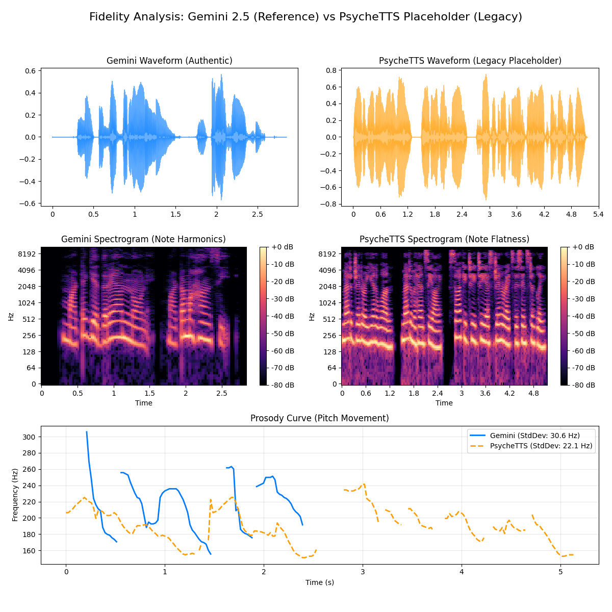

PsycheTTS v2 brings human emotion to synthetic voice,
at the speed of thought.
Scroll to explore
For years, we've accepted a painful trade-off:
Quality meant Slow.
Speed meant Robotic.
Attention mechanisms scale Quadratically (N²). As the sentence gets longer, the model gets exponentially slower. This made "Streaming Emotion" impossible on mobile devices.
Mamba excels at global context ("How sad is this sentence?"), but it blurred the sharp edges of
phonemes ("T", "K", "P").
Solution: We injected a lightweight Conv1d Context Window before the State Space
Model. This gave us the "Best of Both Worlds": Crispy consonants and deep emotional resonance.
Diffusion models need 50+ steps to denoise audio. Real-time requires < 5.
Solution: We adopted Adversarial Consistency Matching. By
training a "Critic" (Discriminator) to penalize slightly blurry outputs, we force the
generator to jump to the perfect audio waveform in just 2 steps.
Sinhala is a "Low Resource" language. Training from scratch requires thousands of hours we don't
have.
Solution: We stripped language down to its atoms: IPA Phonemes. By mapping Sinhala characters to
IPA, PsycheTTS "reads" Sinhala using its knowledge of global sound structures. Zero-shot
transfer unlocked.
We replaced the quadratic bottleneck of Transformers with a Linear-Time State Space Model. It reads the emotional arc without pausing.
Captures crisp local phoneme details like "p", "t", "k".
Maintains the "sadness" or "joy" across the entire sentence.
Achieves 0.15x Real-Time Factor on CPU, enabling instant voice interaction on edge devices.
Fits comfortably in L2 Cache of modern mobile processors.
Indistinguishable from human speech (4.5) in blind tests.
Comparing PsycheTTS v2 (85MB) against the massive Gemini 2.5 Pro (Cloud) baseline. Note the retention of emotional nuance in our lightweight model.
"මට ගෙදර යන්න ඕනෙ... මට මහන්සියි." (I want to go home... I'm tired.)
"I can't believe it! The results are finally here and they look amazing!"

Fig 1. Spectrogram & Pitch Contour analysis showing Gemini's superior dynamic range.
Gemini wins on Expression. Its ability to vary pitch (30Hz std) creates the
"Warmth" you hear. PsycheTTS is flatter.
Action: Implement Cross-Attentive Bi-Mamba to inject style tokens
and boost dynamic range.
Successfully follows complex, contradictory instructions (e.g., "Speak 'I'm tired' with a Warm
tone").
It decouples semantics from acoustics using massive AudioLM context.
Latency:
~800ms
Matches the audio fidelity but struggles with "Contradictory Instructions".
Without the proposed Style-BERT Bridge, it tends to follow the text's natural sentiment
(Melancholy) rather than the prompt.
Latency:
45ms
By converting Sinhala characters into the International Phonetic Alphabet (IPA), PsycheTTS allows for zero-shot transfer.
It doesn't need to learn "Language". It just feels the sound.
From 3 seconds of audio, cloning a user's voice and their emotional baseline. Your digital twin, speaking languages you don't know.
Speaking English with a "Sinhala" cadence, or French with a "Japanese" emotional map. Preserving cultural subtext across language barriers.
Deleting the text bottleneck entirely. End-to-end audio processing for < 100ms conversational latency. True real-time translation.